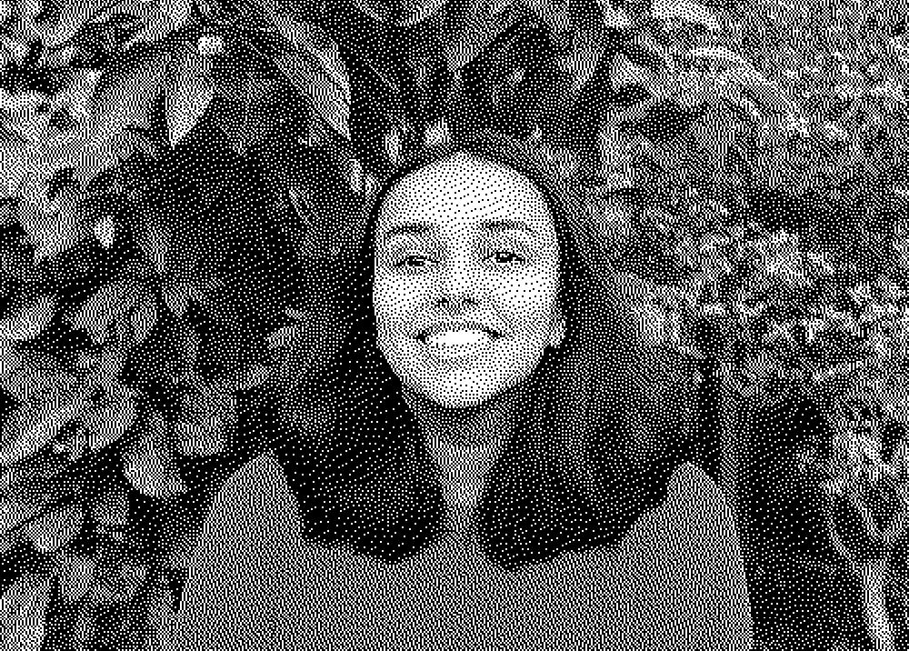

I'm a designer with an aptitude for analytical thinking and an appetite for play. Currently shaping tech for social impact at UNICEF Innovation, where I
guide the design
of solutions we build and invest in.
Previously, I was a designer at Salesforce in San Francisco — see some of that work in this
overview. With a background in graphic design, I've also crafted
brand identities and ads in the past. Find other curiosities and half-baked ideas on my corner of the internet.

i think of my practice as a way to bridge intention and outcome.
Taming the chaos of collaboration through the clarity of process.
Born in India, I'm currently based in Stockholm. To visualise the many places I've called home, I'm graphing my time across cities here. An alumnus of the National Institute of Design and California College of the Arts — see more on my C.V. or go through select projects.